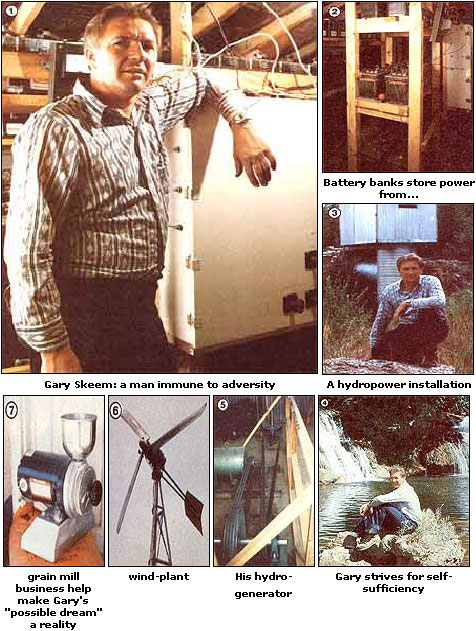

In some ways Gary Skeem resembles many of today's back-to-the-landers (despite the fact that he's lived in the country all his life): He's a hardworking, industrious man, for example, who cares about the earth. His family farm includes a large garden and a greenhouse . . . as well as chickens, goats, rabbits, and bees.
But other aspects of Gary's life are far from typical: In addition to making sure his mini-ranch runs smoothly, for instance, he also manages his own grain mill manufacturing business (the Retsel Corporation). And in his spare time -while recovering from cancer and the loss of one eye-Mr. Skeem up and built a wind-plant and two hydroelectric turbines ... which have provided enough power to allow him to say "thanks but no thanks" to the Utah Power and Light lines that run along the nearby road.
Just how-you're probably wondering -could one person possibly find the time and energy to manage both a farmstead and a manufacturing business, and then turn around and engineer and build several power production facilities, too? Well, the energetic Gem Stater figures that he "takes direction" from the bent toward natural living and self-sufficiency which the circumstances of his life have lent him:
"I had the bout with cancer right after I got married, and I'm sure that experience had a lot to do with giving me my enthusiasm toward life . . . and especially with my interest in natural things. You see, while I was recovering, I became concerned about eating more healthful food-such as whole grains, unsprayed vegetables, and unadulterated victuals in general-because I was convinced that my previous diet had had a lot to do with my getting cancer. As a matter of fact, it was my discovery of the horrible things that most commercial mills do to grain that led me to start my business.
"Anyway, since I couldn't find decent food at the supermarket, I started growing my own . . . and that experience put me on the path toward self-sufficiency. Now it follows logically-at least to my way of thinking-that any effort to be self-sufficient makes a person more independent and has a marvelous effect upon that man or woman's outlook and abilities. In fact, the more I learned to depend upon myself, the more successful I became at every job I undertook. When you do good things and do them right, each success leads smoothly into the next project . . . it's just like the old adage says: 'Success breeds success.' "
As an example of such chain-reaction achievement, the emerging popularity of the Retsel Corporation's grain mills provided Gary with the money and inclination to develop his other "sideline" projects. First came a 2-KW Dunlite wind generator, which proved to be a rather erratic performer in the fickle Idaho breezes. So the impromptu engineer began building a power storage bank to take full advantage of the occasional winds . .. and slowly but surely the Skeem root cellar filled with tiers of batteries. But once his wind system reached optimum capacity-and was able to offset a goodly portion of the Idaho family's monthly power bill-the backyard electrician turned his attention elsewhere.
Since moving water (from two year-round streams) was abundant on his land, the ingenious inventor opted for hydropower. At first Gary-who had by this time gotten his brother involved in the project-experimented with homemade water wheels (including undershot, overshot, and side-shot designs) but found that the attractive devices spun too slowly to make electricity and tended to ice up badly in the winter. So Gary began working with hydroturbines.
When the neophyte power producer finally got his first 15-KW Leffel turbine on-line, he discovered that his need for Utah Power and Light's electricity was just about gone. In fact, once Gary had installed an expanded battery bank, his family's utility consumption dropped from about 2,700 KW to only 12 KW per month! (Except for a few shutdown hours for adjustments, Mr. Skeem probably wouldn't have used any UP & L watts.) Unfortunately, what seemed like a real achievement-not to mention a tremendous cash and energy saving was soon to grow into a major confrontation between Gary and the utility.
The conflict started when the bill for that first "hydropowered" month arrived. Either the utility miscalculated or the meter was misread, because the charge was just about the same as in previous months. As it happened, Gary had been keeping close track of his meter's progress in order to monitor his new system's performance. So he called the UP & L office and informed them that he couldn't have used as many kilowatts as the bill claimed . . . since his home had been switched off their line for most of the month!
A day later a power company inspector dropped by the house while Gary was away, and a carpenter-who was working on the property-showed the UP & L man the generating setup. On the following Monday Gary got a call from that representative. The man complimented Mr. Skeem on the quality of his power system and asked if the Leffel turbine was likely to supply most of the family's electrical demands. Gary replied that the generator and batteries should take care of the bulk of their needs. This, the utility's employee informed Skeem, entitled the power company to levy a $1.50per-kilowatt demand service charge for standby service. (Since the Skeems' lines have a 200-ampere entrance, they had about 20 KW of potential use. That amounted to a $30 monthly charge, for nothing! Any power that they consumed would be billed for in addition to the surcharge . . . and not at the lower all-electric rate the Skeems had been paying.)
The ensuing conversation changed tone slightly and went something like this:
Gary: I wasn't aware of the standby charge.
UP & L: Well, that's the way it is.
Gary: That may be the way it is, but I'm not going to pay it.
UP & L: Then the only thing we . can do is jerk out your power lines.
Gary: I guess you'd better march on down here and do it then.
Apparently that was not the direction the UP & L official had expected the conversation to take, because he paused for a good while before continuing on a different-tack:
UP & L: How much do you have invested in that generator ... $10,000?
Gary: Yes, about that much.
UP & L: Do you realize that if you'd taken that money and put it in a bank, you could pay for all the UP & L electricity that you'd ever need with the interest?
Gary: Could be, but that's not the way I chose to do it.
Mr. Skeem now likes to add that-as he spoke those words-he was actually thinking, "The generator's worth ten grand, buddy, if it helps me get rid of you and your kind! "
The following day the power company sent linemen to remove the Skeems' meter. For some time after that, the utility talked about taking away the wires and poles as well, but they eventually backed down . . . because of both the cost of such an effort and the adverse publicity they were already beginning to receive.
The plucky power-maker even had a few thoughts about instigating legal proceedings against the utility-since he was aware of the New York state decision requiring utilities to buy excess power from a small installation-but those ideas were set aside in favor of a total separation from UP & L influence. Now (after nearly three years) the Skeems still aren't using a single watt of "public" electricity.
In fact, there's an additional Leffel unit next to the first one now, and Gary is in the process of restoring an old turbine to further augment his capacity. Somewhere in the works is a plan to move the grain mill manufacturing business onto his residential property and hook that into the turbines, too.
But the self-taught inventor hasn't restricted his explorations to hydropower. Most of his current energies are devoted to developing a hybrid electric car . . . which is proceeding as quickly as finances will allow. And if this Idaho entrepreneur's past track record in turning ideas into realities is any indication of how his future projects will go, we should be hearing more about that particular alternative energy vehicle in the very near future!
|
 |
|
|